Chuteira Imviso
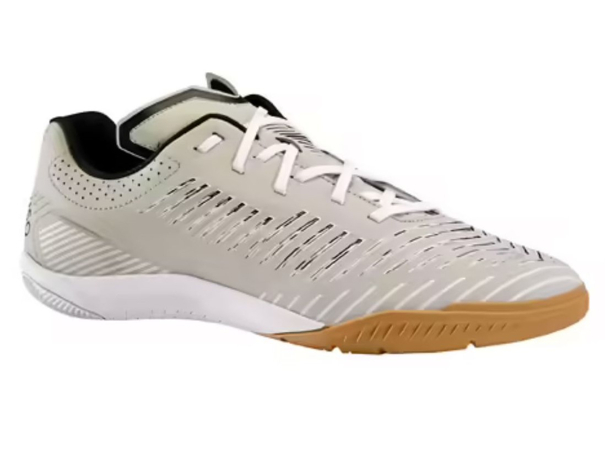A chuteira Imviso Ginka 900 é perfeita para quem busca velocidade e precisão. Com cabedal em material sintético, solado em borracha e design inovador, essa chuteira é ideal para jogadores de futebol que querem se destacar no campo.
Chuteira Adidas Sala

As chuteiras Adidas Sala são projetadas com características que visam melhorar o desempenho dos jogadores em quadras de futsal. Elas geralmente possuem solados de borracha ou de borracha aderente, com ranhuras especiais para proporcionar maior aderência e tração nas superfícies internas das quadras.
Chuteira Imviso Ginka 900

A chuteira Imviso Ginka 900 é perfeita para quem busca velocidade e precisão. Com cabedal em material sintético, solado em borracha e design inovador, essa chuteira é ideal para jogadores de futebol que querem se destacar no campo.
Chuteira Imviso Ginka
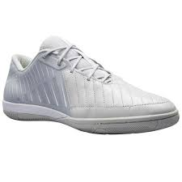A chuteira Imviso Ginka é a escolha certa para quem busca desempenho e estilo nas quadras de basquete. Com cabedal em malha respirável, entressola responsiva e solado de borracha aderente, essa chuteira é perfeita para jogadores de basquete que querem dar o seu melhor.
Chuteira Kipsta Ginka 500
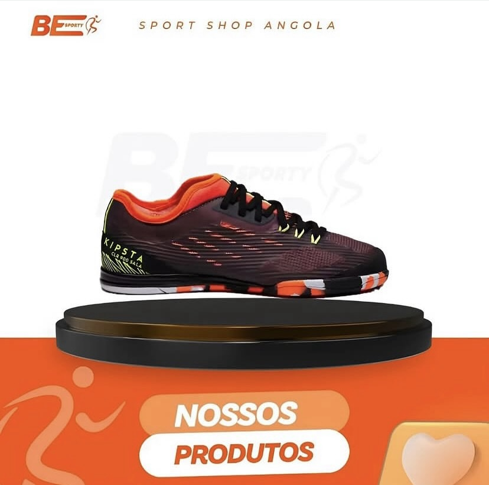A chuteira Kipsta Ginka 500 é a escolha certa para quem busca desempenho e estilo nas quadras de basquete. Com cabedal em malha respirável, entressola responsiva e solado de borracha aderente, essa chuteira é perfeita para jogadores de basquete que querem dar o seu melhor.
Chuteira predator
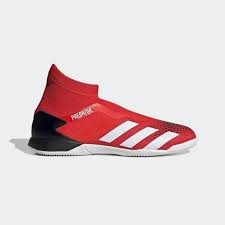A chuteira predator é a escolha certa para quem busca desempenho e estilo nas quadras de basquete. Com cabedal em malha respirável, entressola responsiva e solado de borracha aderente, essa chuteira é perfeita para jogadores de basquete que querem dar o seu melhor.
Chuteira Joma Top flex
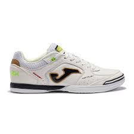A chuteira Joma Top flex brancoé a escolha certa para quem busca desempenho e estilo nas quadras de basquete. Com cabedal em malha respirável, entressola responsiva e solado de borracha aderente, essa chuteira é perfeita para jogadores de basquete que querem dar o seu melhor.
Chuteira Kipsta
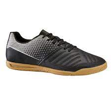A chuteira Kipsta é a escolha certa para quem busca desempenho e estilo nas quadras de basquete. Com cabedal em malha respirável, entressola responsiva e solado de borracha aderente, essa chuteira é perfeita para jogadores de basquete que querem dar o seu melhor.
Chuteira Imviso Ginka 900 MID
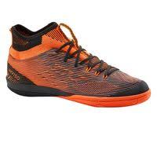A chuteira Imviso Ginka 900 MID é a escolha certa para quem busca desempenho e estilo nas quadras de basquete. Com cabedal em malha respirável, entressola responsiva e solado de borracha aderente, essa chuteira é perfeita para jogadores de basquete que querem dar o seu melhor.
Chuteira Adidass pure
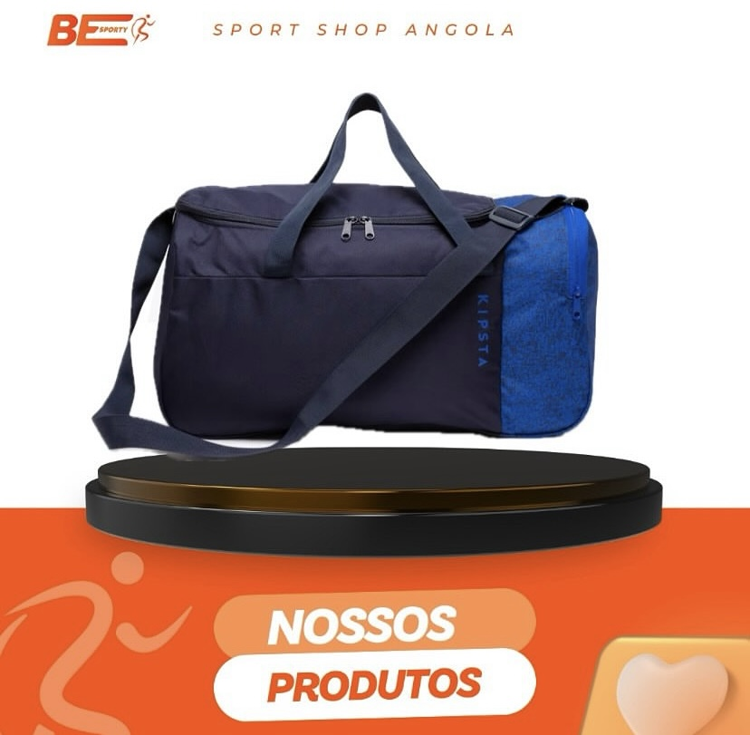A chuteira Adidass pure é a escolha certa para quem busca desempenho e estilo nas quadras de basquete. Com cabedal em malha respirável, entressola responsiva e solado de borracha aderente, essa chuteira é perfeita para jogadores de basquete que querem dar o seu melhor.
Chuteira Adidas X Speedportal
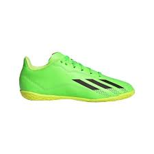A chuteira Adidas X Speedportal é a escolha certa para quem busca desempenho e estilo nas quadras de basquete. Com cabedal em malha respirável, entressola responsiva e solado de borracha aderente, essa chuteira é perfeita para jogadores de basquete que querem dar o seu melhor.
Chuteira Team Quest
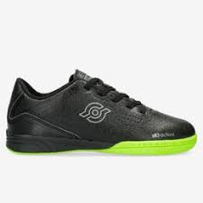A chuteira Team Quest é a escolha certa para quem busca desempenho e estilo nas quadras de basquete. Com cabedal em malha respirável, entressola responsiva e solado de borracha aderente, essa chuteira é perfeita para jogadores de basquete que querem dar o seu melhor.
Chuteira Adidas Sala
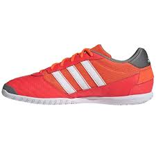Adidas Sala é a escolha certa para quem busca desempenho e estilo nas quadras de basquete. Com cabedal em malha respirável, entressola responsiva e solado de borracha aderente, essa chuteira é perfeita para jogadores de basquete que querem dar o seu melhor.
Chuteira Adidas Sala
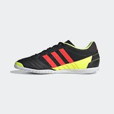Adidas Sala é a escolha certa para quem busca desempenho e estilo nas quadras de basquete. Com cabedal em malha respirável, entressola responsiva e solado de borracha aderente, essa chuteira é perfeita para jogadores de basquete que querem dar o seu melhor.
Chuteira Adidas Sala
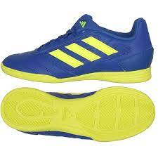Adidas Sala é a escolha certa para quem busca desempenho e estilo nas quadras de basquete. Com cabedal em malha respirável, entressola responsiva e solado de borracha aderente, essa chuteira é perfeita para jogadores de basquete que querem dar o seu melhor.
Chuteira Nike Mercurial Vapor
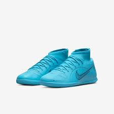Nike Mercurial Vapor é a escolha certa para quem busca desempenho e estilo nas quadras de basquete. Com cabedal em malha respirável, entressola responsiva e solado de borracha aderente, essa chuteira é perfeita para jogadores de basquete que querem dar o seu melhor.
Chuteira Joma
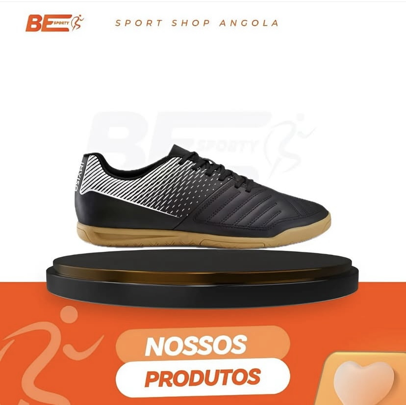Joma é a escolha certa para quem busca desempenho e estilo nas quadras de basquete. Com cabedal em malha respirável, entressola responsiva e solado de borracha aderente, essa chuteira é perfeita para jogadores de basquete que querem dar o seu melhor.